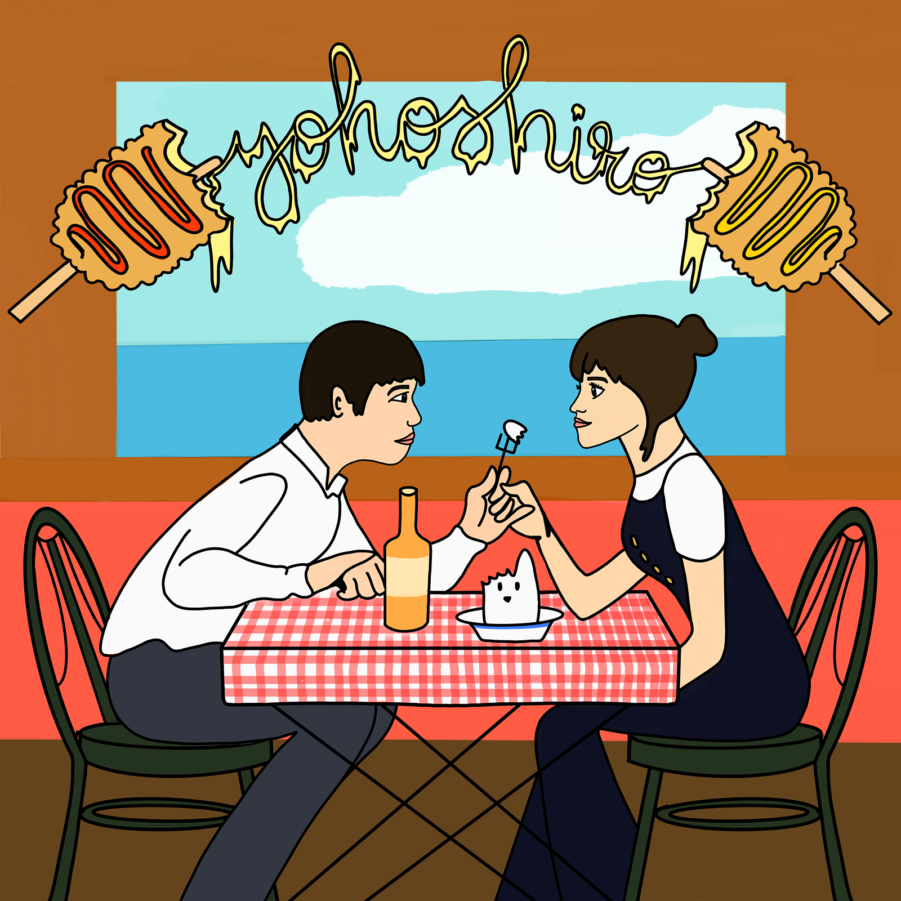
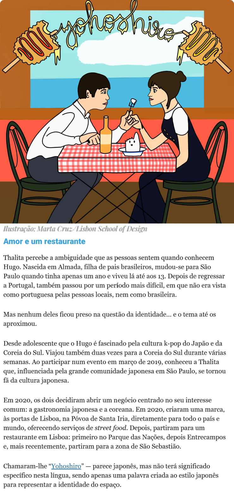
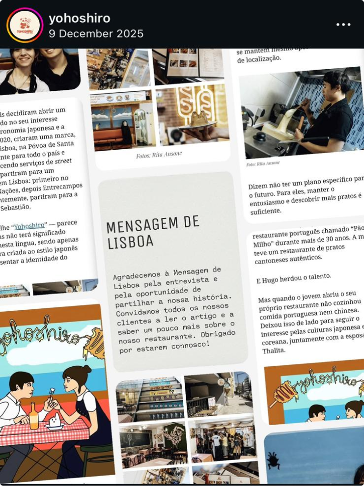

PROJECT 1

Yohoshiro
STATEMENT
An illustration commissioned for Mensagem de Lisboa, accompanying an article about Hugo and Thalita — a Portuguese-Chinese and Brazilian couple who brought K-pop food culture to Lisbon through their restaurant Yohoshiro. Working from their Instagram before the article existed, the brief was entirely self-directed: find the emotional core of the story and make it visible.
The piece centers on their signature Korean hotdogs, but the real subject is the warmth between them — the way their partnership lives inside the food they make. A celebration of two people who built something together.
PROCESS
PUBLICATION

